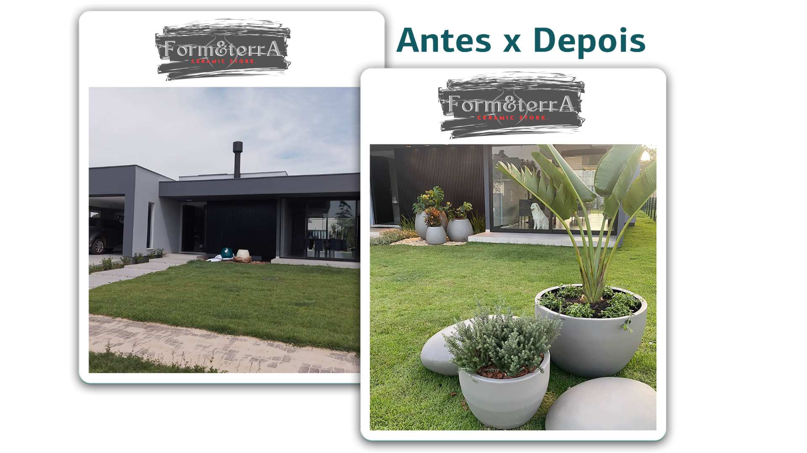

Curso Gratuito: Decoração com Vasos de Plantas
Descubra como os vasos certos podem transformar qualquer ambiente. Aprenda técnicas de decoração, escolha de plantas e muito mais!
Quero Meu Curso Grátis

Aprenda a escolher e utilizar vasos para criar espaços mais verdes e aconchegantes.
Descubra como os vasos certos podem transformar qualquer ambiente. Aprenda técnicas de decoração, escolha de plantas e muito mais!
Quero Meu Curso Grátis